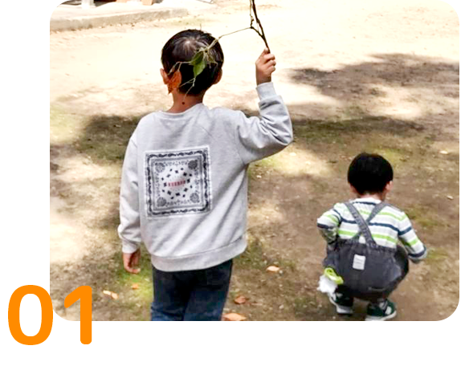
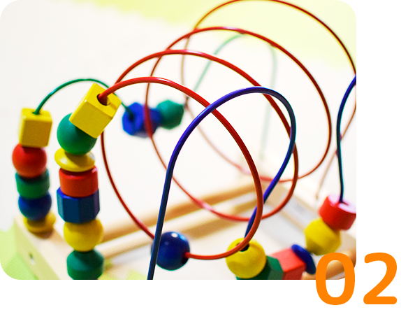
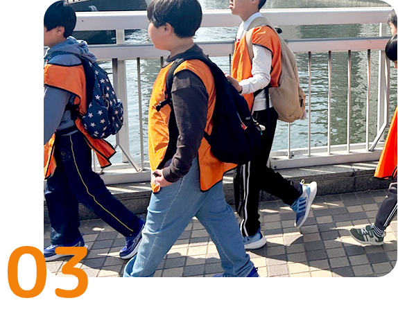
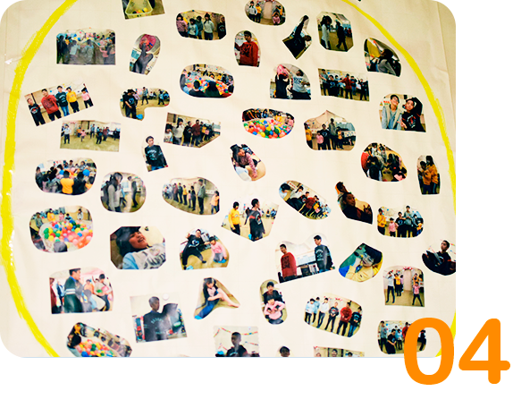

TOP ＞ とんとんについて
とんとんでは、「その人らしく」「楽しさをモットーに」「楽しさの中に成長を」を大事にしています。 障害の有無に関わらず一人一人に得意・不得意があり、伸ばせるところ・伸ばしたいところにも違いがあります。 いろいろな障害・個性を持った方々を支援していくためにとんとんでは、4つの会社理念を設けております。
当たり前のことですが、来てくれた人たちが安心して過ごせる場であり、安全・快適に過ごすことができる場であること。 その中で、「楽しい」と感じていただきその日一日を充実して過ごしてもらえる場を作っています。 また、母子分離でのお預かりになるため、とんとんにお子さんを預けている間、ご家族様が不安な気持ちをお持ちであれば意味がなく、「あそこにいれば大丈夫」と思っていただけるような信頼関係も同時に築いていきたいと考えています。

ただ預かるだけ、楽しければそれでいい。 そんな考えでは意味がなく、楽しさの中に成長を見出してこそ療育の場です。 得意な部分はさらに上に、不得意な部分は少しづつ。 各自の成長ペースに合わせて、やる気を促し、「今困っていることの改善」と「将来を見据えた成長」を考えながら日頃の取り組みやイベントを企画・実行しています。

今まで経験できなかった、させてこなかったことを取り入れ新しい体験をしてほしい。その中にその子に合うものがあったり将来の趣味と呼べるものが見つかれば、生きていくうえでの楽しみとなります。そんな趣味を一つでも多く見つけてほしいと考えています。 また、普段のカリキュラムでもそうですが、「ルール」が必ず存在します。 ルールを守ることは社会で生きていくうえでも必要なことで最初は苦手でも少しづつでも集団活動の中でのルールを覚えていってほしい。 さらに、とんとんの中で学校では出会わない出会いを作り、同年代さらには年上年下との関係を作り友達作りや、イベントを行う中で家族や先生とは違う大人の協力者との出会いも大切にしてほしいと考えています。

とんとんのある場所は商店街で、春と秋に「宮前まつり」が行われています。 祭りの出店も行っており、店番として利用児に関わってもらうこともできます。 また、それ以外にも地域の方々との関わりを大切にしており、役に立てることを見つけ実行しています。現状は、カリキュラムの中の「作業体験」にて地域のごみ拾いを行っていますが、それ以外にも地域と関わりを持ち、普段はどうしても助けてもらう側になってしまうことが多い中、「助け合う」「役に立つ行動」が出来るようにしていき、助けてもらうだけではない助け合いの心を持ってもらいたいと考えています。

上記4つの会社理念と
「その人らしく」「楽しさをモットーに」「楽しさの中に成長を」の考えを基に
日常の生活・イベントごとなどを行っているデイサービスです。